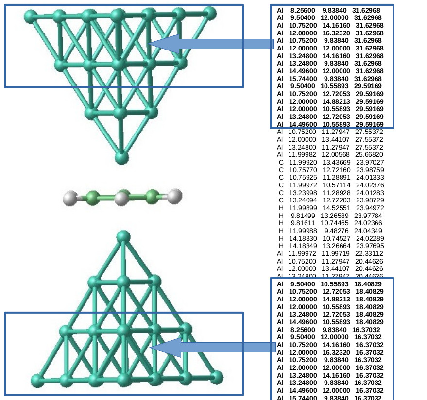

.Gaussian
Common Gaussian input setup
1) The GAUSSIAN03/09 standard links L101 and L502 (l101.exe and l502.exe) have to be replaced by the modified links. This can be done simply by adding the following lines before the section that starts with # in the GAUSSIAN03/09 input file (job_name.com):%Subst L101 $home/ANT.G-x.x.x/bin
%Subst L502 $home/ANT.G-x.x.x/bin
where $home may be substituted by the appropriate directory containing ANT.G.
2) Set the character string in the title line of the gaussian input file job_name.com or job_name.gjf to whatever you like the output files to be named after. You may use the same name as that of the input file (job_name). This should also be the name of the parameters file (job_name.ant) if you want to modify default calculation parameters (and you probably want to).
Building the Gaussian input for Bethe-lattice leads
Include the contact or molecule and a finite crystalline portion of each metallic electrode in the Gaussian geometry. Select TYPE1 = BETHE and TYPE2 = BETHE in the matching job_name.ant file. ANT.G identifies the electrode boundary atoms and attaches Bethe-lattice self-energies along the missing lattice directions to represent the semi-infinite surroundings.
Choose the electrode material and parameter sets. The explicit electrode atoms provide the interface to the contact; the Bethe-lattice model supplies the continuation beyond them. Use BLPAR1 and BLPAR2 to select suitable parameter sets for the two electrodes from the corresponding BLxxx.dat files. Check their suitability for the electrode material and orbital basis. See the Bethe lattice input-file section for the model parameters.
Arrange the electrode boundary regions. Put the outermost region of electrode 1 first in the coordinate list and the outermost region of electrode 2 last, with the contact between them. The outer regions must have crystalline order so ANT.G can identify the lattice directions. The interior contact can have a different structure; a left-electrode/contact/right-electrode ordering makes the geometry and output easier to inspect.
For 3D electrodes, include at least two crystalline planes at each end. List the outermost plane of electrode 1 first and the outermost plane of electrode 2 last. By default, all atoms of these outermost planes are selected for Bethe-lattice attachment. Crystalline regions along different directions of fcc, hcp or bcc structures can be used.
For 2D electrodes, specify the attachment region explicitly. Keep the same ordering and crystalline boundary regions, but set NEMBED1 and NEMBED2 to the numbers of atoms to be connected at the two ends. Otherwise the default can include all atoms assigned to each electrode. Supported geometries include graphene and fourfold- or sixfold-coordinated two-dimensional lattices.
Check the selected boundary atoms. NEMBED1/2 control the Bethe-lattice attachment counts; they are separate from the NATPC1/2 repeated-unit sizes used for periodic 1D leads. Inspect the log and the generated job_name.xyz file: it contains the original cluster and added atoms representing the first sites of the attached Bethe-lattice branches. Confirm that branches are attached at the intended electrode boundaries.

Example from the figure: Al-benzene-Al
The figure above shows the geometry supplied in examples/Al-nanocontacts/Al-benzene-Al.gjf: a benzene molecule between two pyramidal Al electrodes. Each tip contains 20 Al atoms arranged in planes of 10, 6, 3 and 1 atoms, with the single apex atom closest to benzene. The boxed regions contain the outer two planes (10 + 6 atoms) of each electrode. The Bethe-lattice attachment counts refer to the outermost 10-atom planes, not all 16 atoms in each box.
| Atom numbers | Region | z (Angstrom) |
|---|---|---|
| 1-10 | Electrode 1: outermost Al plane; Bethe attachment | 31.62968 |
| 11-16 | Electrode 1: second Al plane | 29.59169 |
| 17-19 | Electrode 1: inner Al plane | 27.55372 |
| 20 | Electrode 1: Al apex | 25.66820 |
| 21-32 | Benzene: 6 C and 6 H atoms | Near 24 |
| 33 | Electrode 2: Al apex | 22.33112 |
| 34-36 | Electrode 2: inner Al plane | 20.44626 |
| 37-42 | Electrode 2: second Al plane | 18.40829 |
| 43-52 | Electrode 2: outermost Al plane; Bethe attachment | 16.37032 |
Electrode 1 is the upper tip in the figure and comes first in the input; electrode 2 is the lower tip and comes last. The coordinates run from high to low z. It is the atom ordering and boundary geometry, rather than the sign of the coordinate axis, that identify the electrode ends.
Download the complete Gaussian input, Al-benzene-Al-bethe.gjf. It preserves all coordinates, the BLYP functional, the explicit Al valence basis/ECP and the C/H STO-3G basis from the existing example. Replace /path/to/ANT.Gaussian/bin in the two %Subst lines with your installation path. The title line is Al-benzene-Al-bethe, so use the matching Al-benzene-Al-bethe.ant:
TYPE1 = BETHE TYPE2 = BETHE BLPAR1 = Papacon BLPAR2 = Papacon NEMBED1 = 10 NEMBED2 = 10 NATOMEL1 = 20 NATOMEL2 = 20 ALPHA = 0.02
NATOMEL1/2 = 20 identify the complete explicit tips, while NEMBED1/2 = 10 select only their outermost planes for attachment. The Papacon Al parameter set is present in BLDAT/BL013.dat.
Inspect the generated Al-benzene-Al-bethe.xyz and log to confirm attachment at atoms 1-10 and 43-52. See TYPE1/TYPE2, BLPAR1/BLPAR2 and NEMBED1/NEMBED2 for parameter details.
Building the Gaussian input for periodic 1D leads
To use periodic wire electrodes, include finite sections of both wires in the Gaussian geometry and select TYPE1 = 1DLEAD and TYPE2 = 1DLEAD in the matching job_name.ant file. ANT.G extracts the lead Hamiltonian and overlap from this finite-cluster calculation and repeats the selected units to form semi-infinite electrodes. The lead unit can contain several atoms across the wire and several layers along it; it need not be the smallest crystallographic primitive cell.
Choose a repeated unit for each electrode. With NPC = 1, its length along the wire must be large enough that hopping and overlap to second-neighbor units are negligible. If the smallest primitive cell is too short, group several primitive cells into the repeated unit and increase NATPC1 or NATPC2 accordingly. Numerical convergence of the Dyson iteration alone does not establish convergence with unit size; check lead DOS and transmission as the unit is enlarged.
Include at least two identical translated copies of the chosen unit at each end of the input cluster. Keep corresponding atomic positions, species, basis assignments and atom ordering consistent from unit to unit. Additional electrode material may be needed to reduce finite-cluster end effects. The two leads are extracted independently and can differ.
Order the coordinate list cell by cell along the wire: outer left unit, next left unit, central contact region, next right unit, outer right unit. Electrode 1 is extracted from the beginning of the atom list and electrode 2 from its end. Keep all atoms of a unit consecutive, with the same internal order in successive translated units. Do not interleave atoms from different units.
Set NATPC1 and NATPC2 to the numbers of atoms in these repeated units, and keep NPC = 1. The outermost NATPC1 and NATPC2 atoms are the buffers excluded from reduced-device charge counting; the remaining atoms form the reduced device. NEMBED1/2 are the Bethe-lattice embedding keywords; their use for 1D leads is retained only as a legacy alias with a warning.
Use the modified L101 and L502 links as described above. Put the job name on the Gaussian title line, and place the matching .ant file in the working directory. Using nosymm avoids Gaussian symmetry reorientation, which is especially important when restarting from a saved density. Preserve the geometry, basis and atom order for such a restart.
Example: a straight Au wire
The following illustrative Au14 geometry contains two three-atom units at each end and two central atoms. With NATPC1 = NATPC2 = 3, atoms 1-3 and 12-14 are the outer buffers. Atoms 4-6 and 9-11 provide the neighboring units, and atoms 7-8 are the central contact. All atoms are spaced by 3 Angstrom. A three-atom unit is an example, not a guarantee that neglected couplings are small enough; check convergence with a larger unit and a longer cluster.
Gaussian input, Au14-1D.gjf (replace the executable paths with those of your installation):
%mem=1gb %NProcShared=8 %Subst L101 /path/to/ANT.Gaussian/bin %Subst L502 /path/to/ANT.Gaussian/bin #p lsda/lanl2dz nosymm pop=min scf=(conver=6,maxcycle=100,nodamp) Au14-1D 0,1 Au 0.0 0.0 0.0 Au 0.0 0.0 3.0 Au 0.0 0.0 6.0 Au 0.0 0.0 9.0 Au 0.0 0.0 12.0 Au 0.0 0.0 15.0 Au 0.0 0.0 18.0 Au 0.0 0.0 21.0 Au 0.0 0.0 24.0 Au 0.0 0.0 27.0 Au 0.0 0.0 30.0 Au 0.0 0.0 33.0 Au 0.0 0.0 36.0 Au 0.0 0.0 39.0
Matching Au14-1D.ant:
TYPE1 = 1DLEAD TYPE2 = 1DLEAD NATPC1 = 3 NATPC2 = 3 NPC = 1 L1DALPHA = 0.75 SELFACC = 1.0d-6 CHARGEACC = 1.0d-4 FERMIACC = 1.0d-4 ETA = 0.01
The numerical values above are starting settings, not a validated accuracy prescription. ETA may need to exceed its default for 1D leads, but broadens spectral features; verify results with respect to ETA and integration accuracy. FERMIACC and CHARGEACC are subject to SCF accuracy adaptation unless FULLACC is requested. Check the log for lead initialization, both Fermi levels and integration warnings before interpreting transmission. See the TYPE1/TYPE2 description and NATPC1/NATPC2 description for the corresponding ANT.G parameters.
Note for missing electrodes:
If one of the electrodes is missing you need to state this in the job_name.ant file using the electrode type GHOST (see ANT.G input file). The transmission is not evaluated, but the calculation is carried out similarly. If both electrodes are missing the calculation is completely equivalent to that of GAUSSIAN03/09, but using the Green's function formalism. This presents several advantages over the standard calculation.